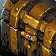

پچ 12.1.7 با عنوان Echoes of the Worldcore در تاریخ ۱ دسامبر منتشر میشود
بهروزرسانی محتوایی بعدی با نام Echoes of the Worldcore در تاریخ ۱ دسامبر همراه با کمپین داستانی تازه، حالت Talebound و ماموریتهای جدید Lorewalking در دسترس قرار میگیرد.

پچ 12.1.7 در تاریخ ۱ دسامبر همزمان با نگهداری هفتگی منطقهای عرضه خواهد شد. در این بهروزرسانی محتوایی، بازیکنان به Dornogal بازمیگردند تا مسیر ورود به Worldcore را بازیابی کنند، در حالت جدید Talebound با روایتهای ماورایی روبهرو شوند و همراه با Li Li Stormstout در جریان داستانهای تاریخی Azeroth قدم بردارند.
کمپین داستانی: The Return to Dornogal
ساختار Worldcore توسط Xal’atath شکسته شده و تنها مسیر دستیابی به آن از میان Coreway آسیبدیده در Dornogal میگذرد. در این کمپین جدید، بازیکنان در کنار شخصیتهای Arator، Brinthe، Dagran و Brann تلاش میکنند تا راه دسترسی دوباره به Coreway و اعماق Worldcore را بیابند.
حالت بازی Talebound
رویداد Talebound یک حالت بازی جدید در سبک اکشن نقشآفرینی (action RPG) برای بخش PvE است. در این بخش، بازیکنان وارد وقایع تاریک یک Storyteller مرموز میشوند و ماجراهای هولناک او را از نزدیک تجربه میکنند.
ماموریتهای Lorewalking با حضور Li Li Stormstout
شخصیت Apprentice Lorewalker Li Li Stormstout در شهرهای Stormwind، Orgrimmar و Silvermoon City مستقر خواهد شد تا رویدادهای شاخص تاریخ Azeroth را برای بازیکنان سطح 10 و بالاتر روایت کند. این ماجراجویی شامل چهار خط داستانی مختلف است:
- Jaina: بررسی مسیر زندگی Jaina Proudmoore، فراز و نشیبهای او و تاثیری که Daughter of the Sea بر تاریخ گذاشته است.
- Thrall: مروری بر نقشهای گوناگون Thrall در مقام برده، وارچیف، شامان، پدر و کشاورز و تصمیمهای دشوار او.
- Titans: بررسی پیشینه تایتانها، چگونگی آشنایی با آنها و اهداف واقعی این موجودات قدرتمند.
- Tyr: بررسی جایگاه نگهبان تایتانها Tyr پس از بازگشت دوبارهاش و تاثیری که بر آینده جهان خواهد داشت.
در طول تجربه Lorewalking، رابط کاربری ویژهای در زیر مینیمپ فعال میشود که به بازیکنان امکان میدهد با فشردن دکمه Ask a Question درباره جزییات کلیدی داستان سوال بپرسند یا با کلیک روی علامت X از آن خارج شوند. این ماجراها بدون محدودیت قابل تکرار هستند.
در حین حضور در سیستم Lorewalking نمیتوان هیچ کوئست دیگری را آغاز کرد یا ادامه داد. با وجود امکان متوقف کردن و بازگشت به داستان، در صورت شروع یک خط داستانی دیگر پیش از اتمام روایت قبلی، تمامی پیشرفت شما در آن ریست خواهد شد.
بازگشت رویداد Turbulent Timeways
رویداد Turbulent Timeways همزمان با آغاز این پچ به مدت هشت هفته در دسترس خواهد بود. بازیکنانی که بتوانند در طول این رویداد، اچیومنت Master of the Turbulent Timeways VI را با حفظ باف Mastery of the Timeways به مدت هر چهار هفته اختیاری تکمیل کنند، مانت هوایی Markeet of the Infinite Skyriding Mount را به دست خواهند آورد. بهعلاوه، فروشندگان Timewalking آیتمهای دکوری جدیدی برای Housing Decor عرضه میکنند. اتمام هر دانجن این بخش ۵٪ باف تجمعی Knowledge of the Timeways میدهد که پس از ۴ بار پاکسازی به باف ۳۰ درصدی کسب تجربه با نام Mastery of Timeways ارتقا مییابد. همچنین کوئستهای Timewalking در Silvermoon City از طرف Archmage Aethas Sunreaver برای مدتی محدود صندوقچه 
- رون Rune of Empowerment: مقدار آمار دریافتی از رونهای Critical Power، Burning Haste، Masterful Cunning یا Versatile Warrior را ۲۰٪ افزایش میدهد.
- رون Rune of Critical Mass: در صورت استفاده از Rune of Void-Touched Orbs، وارد کردن صدمه یا هیلینگ شانس فراخوانی ۳ گوی با دمیج Void به دشمنان یا هیل به یاران در فاصله ۵ یاردی را دارد. همچنین با Core Rune مدل Rune of Unleashed Fire، شانس ایجاد انفجار با دمیج Fire تقسیمشده بین دشمنان یا هیل تقسیمشده بین یاران در فاصله 10 یاردی فراهم میشود.
برای کسب اطلاعات بیشتر درباره Sunstrider Omnium و تاریخچه آن، میتوان با Magister Umbric، Grand Magister Rommath یا Custodian Veldharin در محوطه Lycaneum واقع در جزیره Isle of Quel’Danas گفتگو کرد.